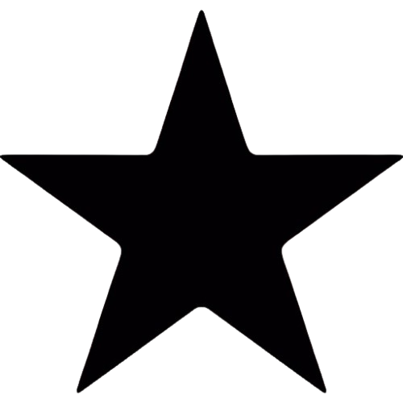
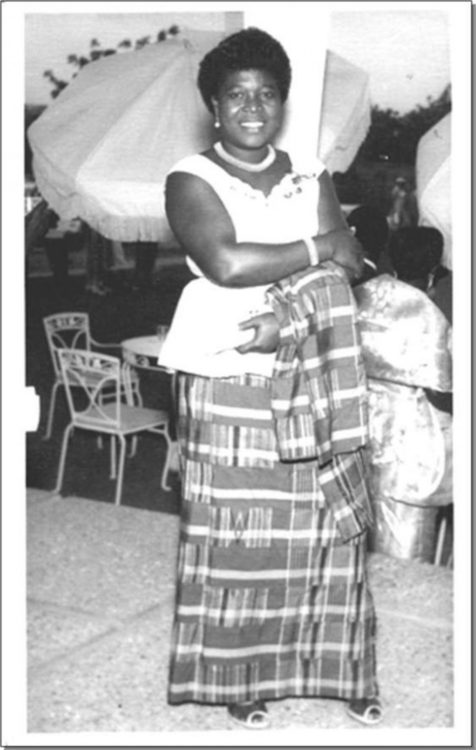

The National Flag
Adopted 6 March 1957 — Designed by Theodosia Okoh

The Black Star Gate
Independence Square, Accra — Gateway to African Freedom
The Coat of Arms
Symbolizing the unity and aspirations of the Ghanaian people

The National Anthem
Adopted 1957 — Composed by Philip Gbeho

Philip Gbeho
Philip Gbeho (1904–1976) was a Ghanaian composer, teacher, and musician who composed Ghana’s national anthem. His work played an important role in shaping Ghana’s national identity after independence.

Theodosia Salome Okoh was a renowned Ghanaian artist and educator best known for designing Ghana’s national flag at independence in 1957. Her design reflects Ghana’s natural wealth, struggle for independence, and leadership in African liberation.

The National Pledge
Recited by Ghanaians to express loyalty and commitment to the nation’s ideals and values.

Kwame Nkrumah (1909–1972), Ghana’s first President, influenced the creation and meaning of Ghana’s national symbols. He promoted the Black Star as a symbol of African liberation and unity, which appears on the Ghana flag and national identity.